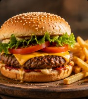
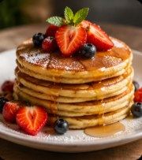

Good evening
What would you like to cook?
Search recipes or ingredients
Chef
Cook what you already have
Tell the chef what is in your kitchen and get meal ideas.
Ask the chef
Categories
Breakfast
Lunch
Dinner
Snacks
Desserts
Popular recipes
See all
Creamy Garlic Pasta
25 min
Easy

Classic Cheeseburger
20 min
Easy

Banana Oat Pancakes
15 min
Easy
Spiced Beef Tacos
20 min
Easy
Home
Explore
Chef
Saved
Pantry